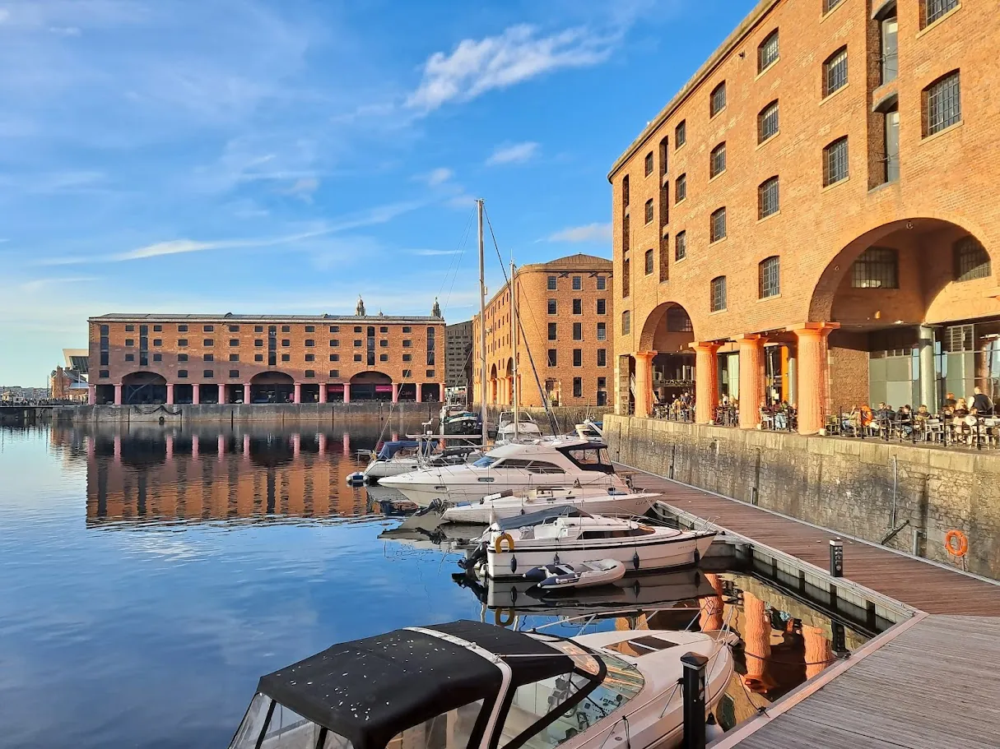
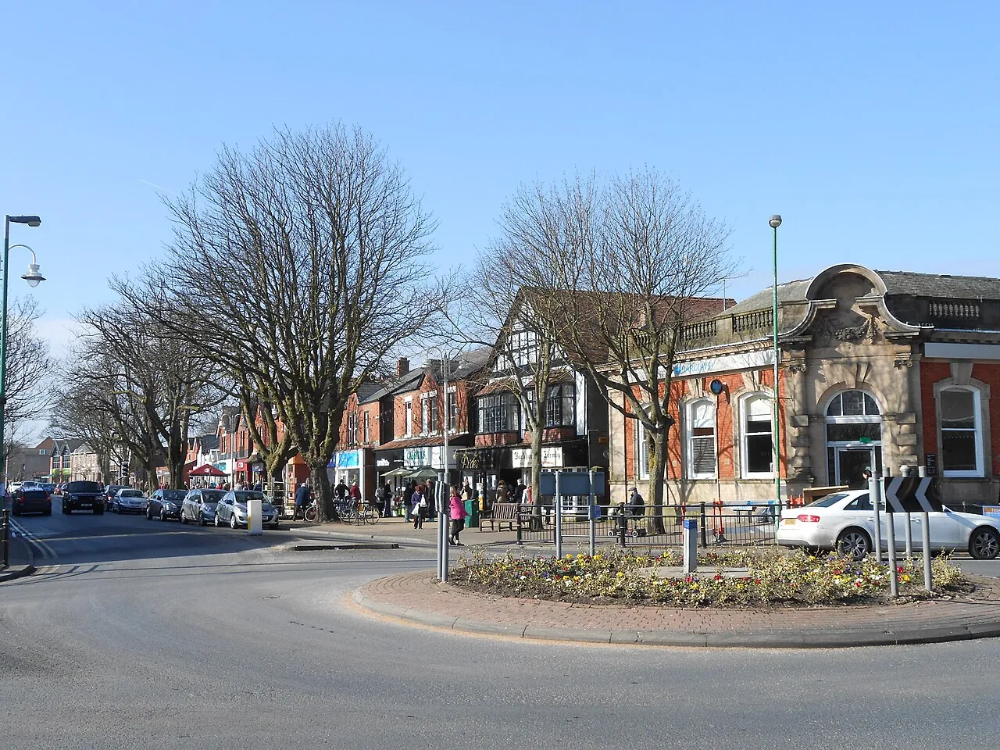
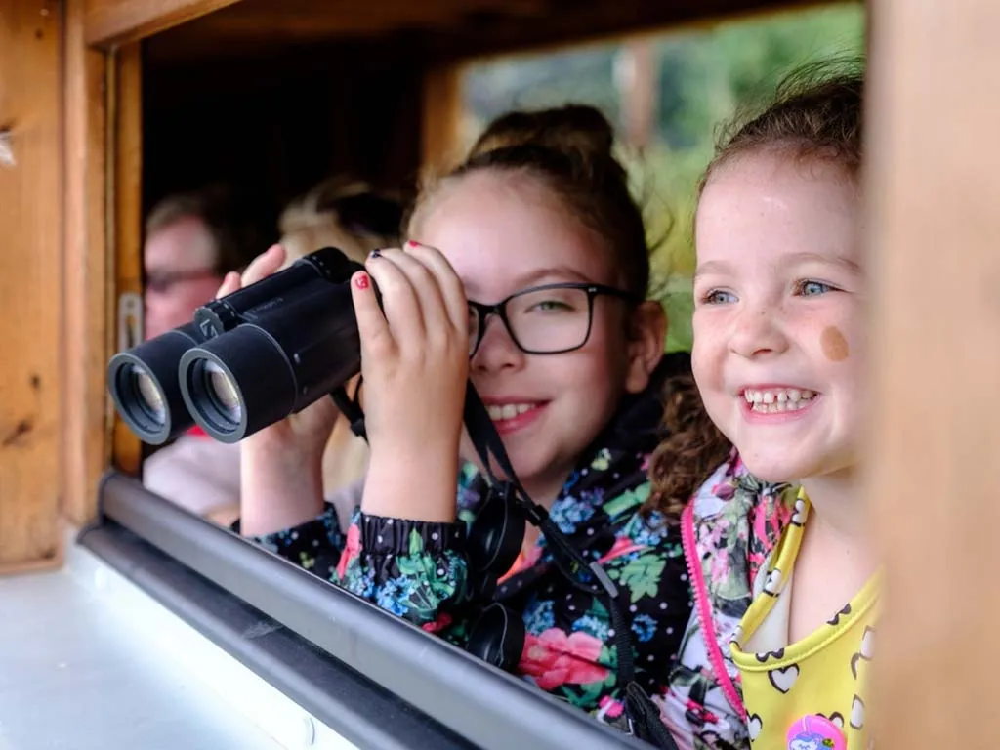
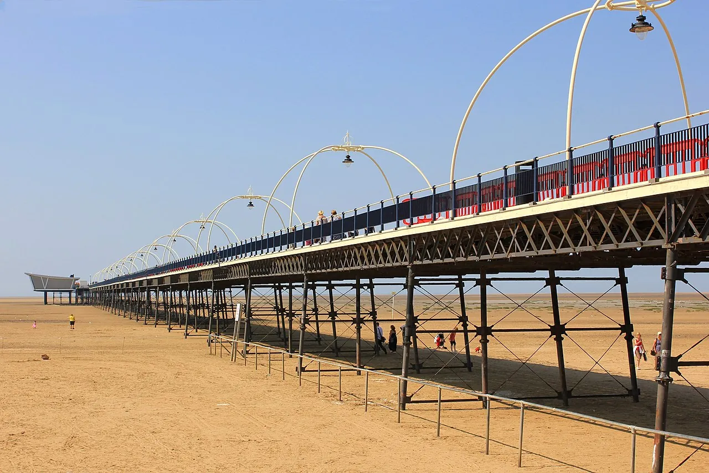
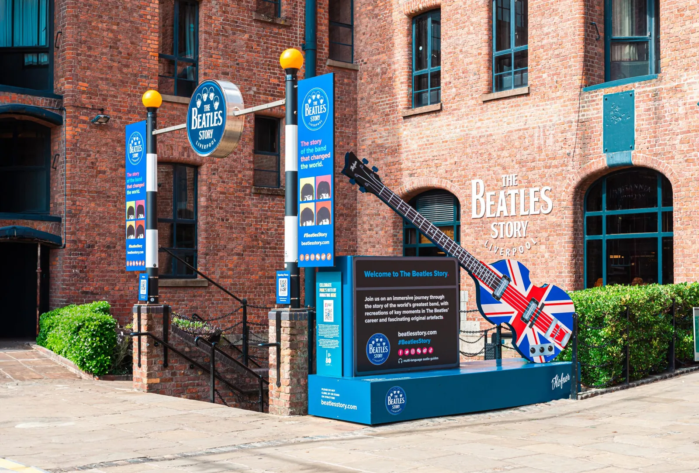
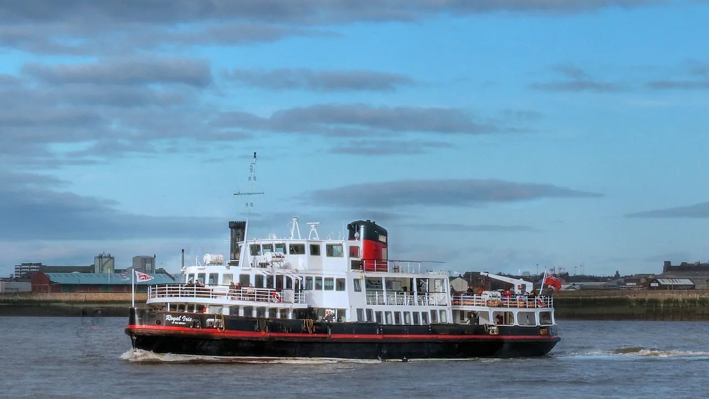
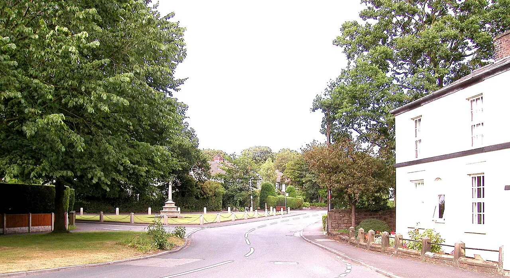

Within Thirty Kilometres
A Saturday-guide to the country, the coast and the city around the Michelin table at Moor Hall, Aughton — what is open, what is closed for the duration of 1926 1936 2026, and three ways to spend the day before the eight-o'clock sitting.
A Saturday at Aughton, and what to do with it
Aughton sits ten kilometres inland from one of England's most distinctive coastlines — a twenty-two-mile dune-belt with pine woods, an iron-men sculpture in the surf, and one of the country's last red-squirrel strongholds[48]. Liverpool is half an hour by Merseyrail from Town Green[36]; Southport, seventeen minutes by motor-car[52].
Three loops emerge from the ledger. The coastal — Formby pine-woods plus Antony Gormley's Iron Men at Crosby[46]; the civic — train to Liverpool for Royal Albert Dock[23], a cathedral, and the Mersey Ferry[34]; and the local — Ormskirk Market[68], the Tudor screen at Rufford Old Hall and the wetlands at WWT Martin Mere[7].
Two announcements, neither subtle: Southport Pier is closed for the whole of 2026[38]; Speke Hall's Tudor mansion is closed on a Saturday[13]. Plan around them. The rest follows.
From Aughton, in the four cardinal directions
The thirty-kilometre radius about Moor Hall, by points of the compass
North — 10 to 20 minutes by motor
- WWT Martin Mere — 10 min · wetland birds, canoe safari, free parking
- Rufford Old Hall — 15 min · NT Tudor manor, carved 1500s screen
- Mere Sands Wood — 15 min · 42 ha, six hides, 170+ bird species
- Burscough Wharf — 10 min · canal-side, seven independents
West — 17 to 25 minutes
- Formby NT — 20 min · pine-wood walk, red squirrels, £9 park
- Ainsdale Sandhills — 20 min · 988 ha, natterjacks, 8 mi paths
- Southport — Lord Street — 17 min · Victorian boulevard + Botanic Gdns
- The Atkinson — Southport · "20 Years of Another Place"
East — 20 to 30 minutes
- Beacon Country Park — 20 min · 300 acres, Tramper hire, café
- Rivington Terraced Gardens — borderline 30 km · hilltop gardens, four free car-parks
- Hoghton Tower — check first · self-guided Sat 11:00–16:00
South — 25 to 30 minutes
- Crosby Beach — Another Place — 25 min · 100 iron Gormley figures, 3 km of foreshore
- Liverpool — Royal Albert Dock — 30 min by train (every 15 min)
- Knowsley Safari — 25 min · drive-through + foot safari, £24.75
- Sefton Park Palm House — Liverpool · free Victorian glasshouse
- Croxteth Country Park — 25 min · 500 acres, Home Farm, miniature railway
Pre-Dinner Itineraries
Three day-loops, each finishing in time to dress and arrive at Prescot Road by eight
Pine-Woods & the Iron Men
- Morning
- Formby NT — pine-woods walk & broad beach. Park at Lifeboat Road, £9; Victoria Road shut until spring 2026[49]. Watch for red squirrels[48].
- Afternoon
- Drive to Crosby Beach at low tide for Gormley's hundred iron figures[46]. Lunch on St John's Road, Waterloo[82].
- Pre-Dinner
- A59 north, home for 17:30.
Northern Line to Albert Dock
- Morning
- Merseyrail from Town Green to Liverpool Central[36]; walk down Bold Street to the Royal Albert Dock[23].
- Afternoon
- The Beatles Story (£20)[28], then a Mersey Ferries River Explorer (last boat Seacombe 16:00)[34], finishing uphill at Liverpool Cathedral (Tower to 16:30)[30].
- Pre-Dinner
- Train home — every fifteen minutes from Central.
Market, Tudor Manor, Wetlands
- Morning
- Ormskirk Market from 09:00 — 100 stalls on Moor, Aughton & Church Streets[68]; coffee at Bloom & Brew.
- Afternoon
- Rufford Old Hall, NT — house 11:00–16:30, garden 10:30–16:30[12]. Lunch at Burscough Wharf[70].
- Pre-Dinner
- WWT Martin Mere bird-walk — open till 18:00, last entry 17:00[7].
Open, closed, partial — for a Saturday in 2026
The thirty-kilometre ring is heritage-dense, but several headline properties have unusual Saturdays this year
Plates from the Thirty-Kilometre Circle
A handful of views, chosen for their telling-quality and their photographic record










Notice to Travellers
Things to know are off the table, or risky, before you set off
- — CLOSED ALL 2026 — Southport Pier. Shut since December 2022; £20m of Growth Mission Fund money is restoring the Grade II-listed structure, beginning early 2026 and lasting roughly fourteen months[38].
- — CLOSED SATURDAYS — Speke Hall, the house. Only the gardens (10:00–17:00) open on a Saturday in 2026[13]. Plan it as a grounds-only stop or skip.
- — REOPENING 2028 — International Slavery Museum & Merseyside Maritime Museum. Both closed January 2025 for redevelopment[26].
- — TEMPORARY — Tate Liverpool — the Albert Dock home is being redeveloped; the gallery is operating from RIBA North on Mann Island, free, 10:00–17:50[24].
- — UNTIL SPRING — Formby — Victoria Road car park. Closed for a conservation project. Use Lifeboat Road, or take the Merseyrail to Freshfield[49].
- — FEW DAYS / YR — Meols Hall opens only on the May Bank Holiday Mondays and 31 Aug–25 Sep[14]; Scarisbrick Hall opens 20 Aug and 23 Oct in 2026[19]. Not generic-Saturday visits.
- — PERMANENT — Mattel Play! Liverpool — closed June 2020[66]. Don't be misled by older blog posts.
- — OUT OF RADIUS — Lytham Hall — thirty miles / 48 km by road, just over the thirty-kilometre brief[53]. Lovely if you stretch.
Beyond Moor Hall — the surrounding food
A Michelin dinner is the spine; here is the rest of the day in cake, fish, gin and street-food
In Ormskirk
- Ormskirk Market Thu & Sat 08:00–16:30 · ~100 stalls on the pedestrianised Moor/Aughton/Church Street block[68]
- Food & Drink Market Indoor hall · Sat 10:00–21:00 · six street-food traders + bar[69]
- Lagom Bakery Sourdough & specialty coffee · Wed–Sat 9–3[79]
- Bloom & Brew Two minutes from Ormskirk station · Liverpool's Neighbourhood roastery[80]
- The Kicking Donkey Contemporary British gastropub — Friday-night option, not Moor-Hall-Saturday[81]
On the Road North
- Burscough Wharf Canal-side · seven independents — Baja Mexican, Cactus Ray's, Gurkha Village, Hugo's, Milkie Bar, Only Scrans, The Thirsty Duck[70]
- Owd Barn at Bispham 16th-c listed barn · tea room + farm shop · soft pre-dinner stop[76]
- Southport Market Sat 10:00–23:00 · nine independents — Tikka Bros, 600 Degrees, Pasta 51, Little Korean Kitchen, Lennys Smashport[74]
- Birkdale Cheese Co 150+ cheeses, 40+ years in the village · Mon–Sat 9–5[75]
In Liverpool
- Bold Street The city's indie spine — Mowgli (Nisha Katona's), Bundobust, Maray[77]
- Liverpool Gin Distillery Castle Street · four floors, 600L copper still ("Margaret"), 40+ gins[71]
- Black Lodge Brewing Baltic Triangle · keg & cask · Fatback Burgers resident[73]
- Salt Dog Slim's 79 Seel Street · chilli dogs, world beers · open until 2–3am[78]
- St John's Road Waterloo/Crosby · Cafe V76, Little Deli, Crosby Coffee Roasters, StoryHouse · the natural post-Gormley lunch stretch[82]